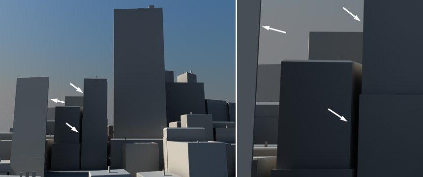

Function available in CINEMA 4D Prime, Visualize, Broadcast, Studio & BodyPaint 3D
查看
如果选择了这个选项，活动摄像机会在图片查看器中被用来渲染。
提示：
使用这个设置来确定在图片查看器中哪个视图会被用作渲染。
使用这个设置来确定在图片查看器中哪个视图会被用作渲染。
每个视窗都有自己的撤销视图 / 重做视图功能（主菜单中的撤销 / 重做功能不会影响摄像机，这里专指视窗中的撤销 / 重做视图）。
撤销视图的快捷键是 Ctrl +Shift +Z，重做视图的则是 Ctrl +Shift +Y。
摄像机会移动，使包括灯光、摄像机的所有对象充满视窗并居中。
摄像机会移动，使初灯光和摄像机外的所有对象充满视窗并居中。
这个功能会重设视窗到默认值，就像你刚开始使用 CINEMA 4D 时一样。
摄像机会移动，使被选择的元素（如对象、多边形）充满视窗并居中。
摄像机会移动，使活动对象充满视窗并居中。
提示：
在使用以下快捷键时按住Alt 键来缩放所有视图，而不只是活动视图：框显选取元素(S)、框显选择中的对象(O)和框显几何体 (H)。
在使用以下快捷键时按住
箭头指向的实际是相同的地方，其中右边使用了镜头移动和镜头缩放命令。
这三个工具（能在自定义命令管理器中找到）与以下工具功能类似（在每个视窗的顶部）：
这三个工具与视窗导航图标作用相同，除了它们会保持透视角度，也就是说线的角度会保持一致。例如，房子的边线在使用镜头移动、镜头缩放和镜头推移工具前后保持相同的角度。
在属性管理器中，设置模式参数为摄像机，现在如果用镜头移动、镜头放大和镜头缩放改变图片的显示部分，你会看到摄像机的焦距、视野、视点、水平偏移和垂直偏移的值同步改变。
这个功能会重绘场景。通常 CINEMA 4D 会自动更新视窗，但有时候这会失效，比如当你在短时间内使用了几个 CPU 密集的命令。